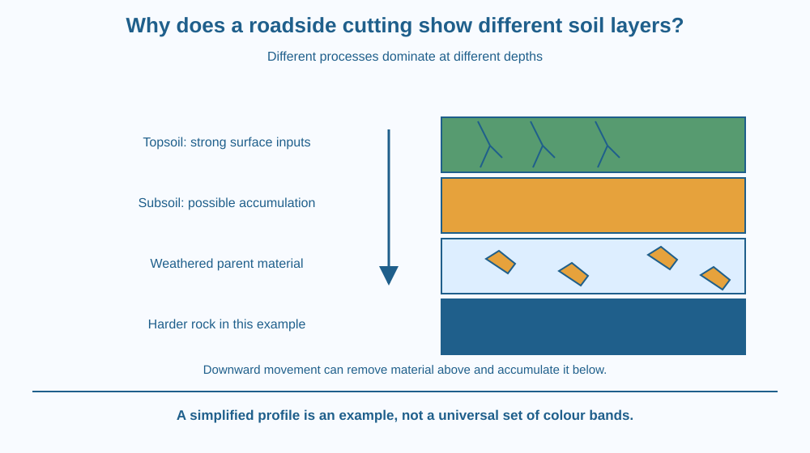

Read a simplified soil profile as a record of processes operating at different depths. Distinguish horizons, parent material and bedrock. Explain how weathering, biological activity and downward movement of materials can create contrasts without assuming that every soil has the same coloured bands.
A safe photograph of a roadside cutting shows a dark upper layer, a browner layer below and partly broken rock near the bottom. Nobody arranged these colours as a classroom display. The pattern developed as the ground changed over time.
Why does the surface differ from deeper material? Rain enters from above, leaves arrive at the surface, roots grow through some zones, and rock changes at depth. These influences are not equally strong everywhere. A soil profile records their combined effects, although a photograph alone cannot reveal every detail of its history.
A soil profile is a vertical view through soil and the material beneath it. Distinct regions that have developed through soil-forming processes are called horizons. A horizon may differ in colour, texture, structure or composition from material above and below.
Parent material is the mineral material from which a soil develops. It can come from underlying rock, or it may have been transported and deposited elsewhere before soil formation. Therefore the present rock directly below a soil is not always its only source.
Weathering breaks down or alters rock and mineral material. Physical processes create smaller pieces, while chemical processes can change minerals. Over time, suitable conditions allow this material to become part of a soil system with water, air, organic matter and organisms.
The upper region commonly receives plant litter and strong biological influence. Mixing and transformed organic materials can darken it. However, dark colour alone does not provide a precise measurement of fertility or organic content. Mineral composition and moisture also influence appearance.
Water moving downward can dissolve or carry some materials from upper regions. The removal of soluble materials is often called leaching. Fine particles or dissolved substances may be moved from one horizon and accumulated in another, creating contrasts in colour or texture.
A subsoil can therefore differ from topsoil rather than simply being more of the same material at greater depth. Some subsoils accumulate clay or iron compounds, but the exact pattern depends on climate, drainage, organisms, parent material and time.
A simplified school profile may show topsoil, subsoil, weathered parent material and harder bedrock. This is a useful starting diagram, not a universal template. Some profiles lack clear boundaries; others contain additional horizons or signs of disturbance.
A construction site can expose mixed fill, buried surfaces or transported material. Coloured bands in such a site are not automatically natural soil horizons. The origin of the layers needs investigation. Likewise, a layer of deposited sediment is not necessarily a horizon created by soil-forming processes.
Think of a profile as a page influenced from several directions. Organic inputs arrive mostly from the surface; water carries some materials downward; roots and organisms mix selected regions; parent material contributes minerals from below or from an earlier deposit.
Draw arrows for those processes beside a vertical column. Place the horizon boundaries only after considering where the processes would differ in strength.
This approach is better than memorising four colours. If rainfall, drainage or parent material changes, the pattern can change too. A useful model identifies why regions differ and leaves room for profiles that do not match the simple school illustration.
The SVG shows four simplified bands: topsoil, subsoil, weathered parent material and bedrock. Each band has its own text zone, separate from the illustrated grains and roots.
Downward arrows show movement of water and some dissolved or fine material. Surface litter and roots indicate biological influences near the upper region. Broken shapes lower down show weathered mineral material becoming less altered toward the base.
A caption warns that the profile is an example. The colours identify bands in this model and do not serve as a universal colour code for identifying horizons in every Indian soil.

A shallow garden hole may reveal only part of a profile. A deeper safe exposure can show more, but entering or climbing roadside cuttings is dangerous. Photographs and prepared classroom samples are better ways to investigate them.
When construction removes topsoil and leaves deeper material at the surface, a garden may behave differently. The exposed material can differ in organic content, structure and rooting conditions. It is not enough to call every brown material “the same soil.”
India contains many soil types under different climates and parent materials. A single diagram cannot represent all of them, so local observations should be described carefully rather than forced into an identical sequence.
Use paper and coloured pencils. If an adult has a safe photograph of a soil exposure, use it; otherwise work from the diagram. Do not approach an active road cutting or dig a deep hole.
A picture cannot confirm every chemical process. Treat a proposed explanation as a hypothesis unless additional information supports it. Do not call a dark band fertile simply because it looks dark.
Suppose two profiles developed from similar rock, but one lies on a well-drained slope and the other in a low wet area. Why might their colours and horizons differ?
Now consider soil transported by a river. Explain why the rock underneath does not necessarily identify the full source of its mineral material. A profile records both local processes and the history of the material that arrived there.
What is a soil profile?
Answer: C — A profile displays changes with depth through the soil and underlying material.
Why can subsoil differ from topsoil?
Answer: A — Unequal inputs and transport processes can create different horizon properties.
A band is dark in a photograph. What should you conclude?
Answer: B — Colour has several causes and is not a direct complete measure of fertility.
Create a guide for comparing two soil photographs. Require observations of boundaries, roots, fragments and colour before offering explanations. Include weathering and downward material movement as possible processes.
Add one warning against identifying every layer as a natural horizon. Your guide should be able to describe a mixed construction fill as uncertain instead of forcing it into topsoil, subsoil and bedrock without evidence.
The material a soil develops from need not come only from the rock immediately below it. Rivers, wind and other transport processes can deposit mineral material before a soil forms. A soil profile is therefore a local record that may include a history beginning somewhere else.
Soil horizons differ because weathering, biological inputs and movement of materials act unevenly with depth; no single profile pattern fits every location.